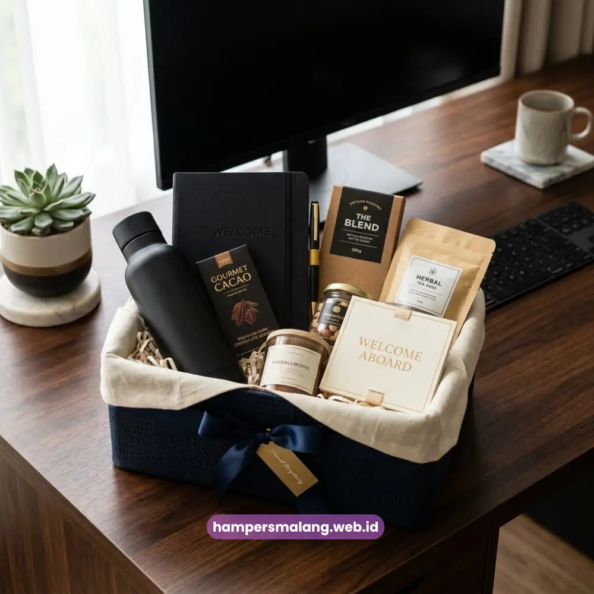
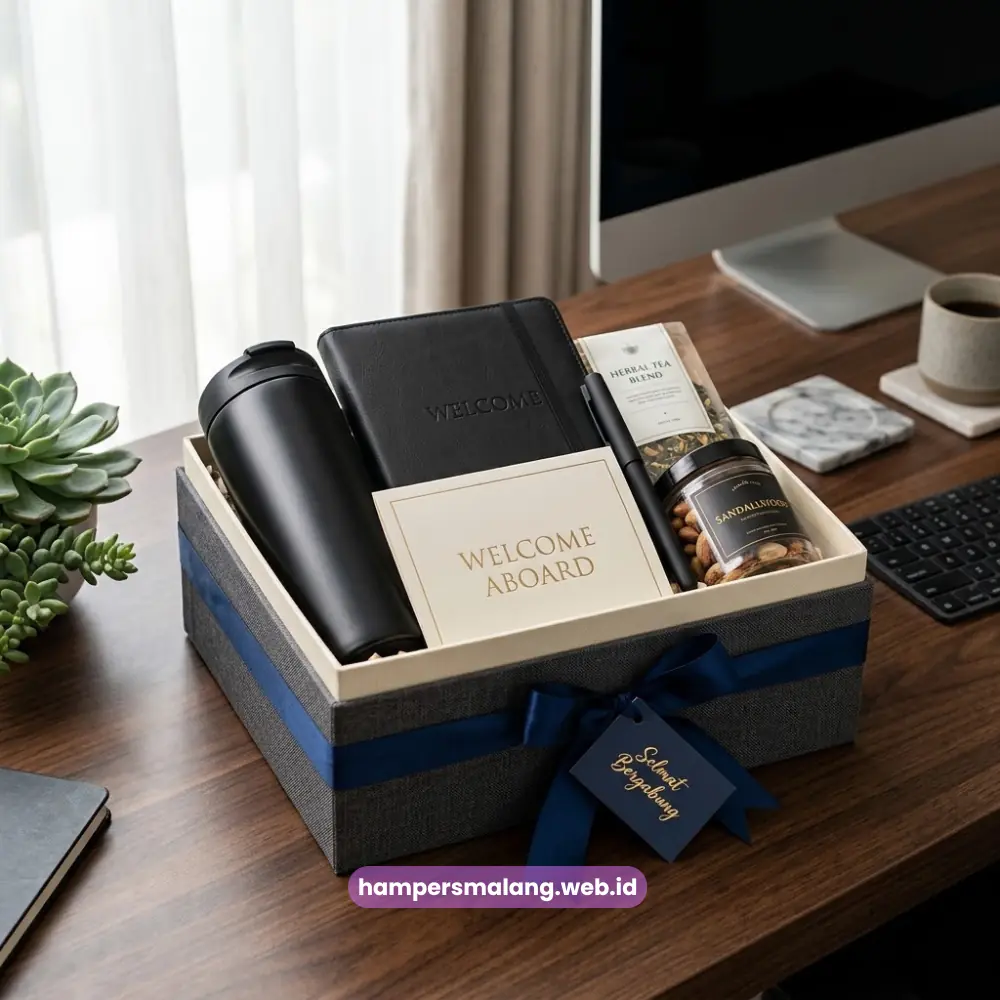

Hampers onboarding karyawan adalah paket sambutan berisi kombinasi merchandise, perlengkapan kerja, dan camilan yang diberikan perusahaan kepada karyawan baru pada hari pertama bekerja.
Paket ini dirancang untuk menciptakan kesan pertama yang hangat sekaligus mempercepat rasa memiliki karyawan terhadap perusahaan.
Hampers Malang menyediakan layanan pembuatan hampers onboarding karyawan yang dapat disesuaikan dengan identitas brand dan budaya kerja perusahaan Anda.
- Hampers onboarding karyawan membantu perusahaan menciptakan kesan pertama yang positif di hari pertama kerja.
- Paket ini umumnya berisi merchandise berlogo, alat tulis, dan camilan pilihan yang relevan dengan brand perusahaan.
- Pemberian hampers dapat mendukung proses adaptasi emosional karyawan baru terhadap lingkungan kerja.
- Perusahaan dapat memesan hampers custom yang mencerminkan identitas dan nilai perusahaan.
- Hampers Malang siap membantu proses konsultasi hingga produksi hampers onboarding sesuai kebutuhan perusahaan.
Apa Itu Hampers Onboarding Karyawan dan Mengapa Dibutuhkan Perusahaan?
Hampers onboarding karyawan adalah bentuk apresiasi awal yang diberikan perusahaan kepada karyawan baru sebagai bagian dari proses penyambutan resmi.
Kebutuhan ini muncul karena hari pertama kerja sering menjadi momen yang menentukan bagaimana karyawan menilai budaya dan profesionalitas perusahaan tempatnya bekerja.
Definisi Hampers Onboarding dalam Proses Rekrutmen
Dalam konteks rekrutmen dan people management, hampers onboarding karyawan berfungsi sebagai pelengkap dari proses administrasi formal seperti penandatanganan kontrak kerja dan pengenalan sistem perusahaan.
Berbeda dengan hampers untuk klien atau relasi bisnis, hampers ini lebih berfokus pada unsur kenyamanan kerja, seperti notebook, pena, tumbler, hingga camilan ringan yang bisa langsung digunakan karyawan di meja kerjanya.
Baca Juga: Ide Isi Paket Hampers Karyawan yang Berkesan untuk Perusahaan
Peran Hampers dalam Membentuk Kesan Pertama Karyawan Baru
Kesan pertama yang baik cenderung memengaruhi bagaimana seseorang menilai lingkungan barunya secara keseluruhan.
Ketika karyawan baru menerima hampers onboarding yang disiapkan dengan rapi, mereka mendapatkan sinyal bahwa perusahaan memperhatikan detail dan menghargai kehadiran mereka sejak awal.
Hal ini secara alami membangun rasa nyaman yang mempermudah proses adaptasi di minggu-minggu pertama.

Mengapa Hampers Onboarding Karyawan Penting bagi Perusahaan Modern?
Hampers onboarding karyawan penting karena berkontribusi langsung pada pengalaman kerja karyawan sejak hari pertama, yang pada gilirannya dapat memengaruhi motivasi dan loyalitas jangka panjang.
Perusahaan yang menaruh perhatian pada detail kecil seperti ini umumnya dianggap lebih peduli terhadap kesejahteraan timnya.
Dampak terhadap Employee Experience
Employee experience tidak hanya dibentuk oleh gaji dan fasilitas kerja, tetapi juga oleh momen-momen kecil yang membuat karyawan merasa dihargai.
Hampers onboarding menjadi salah satu titik sentuh pertama yang dapat memperkuat persepsi positif karyawan terhadap perusahaan, bahkan sebelum mereka mulai memahami seluk-beluk pekerjaan itu sendiri.
Hubungan antara Hampers Onboarding dan Retensi Karyawan
Secara umum, karyawan yang merasa disambut dengan baik pada masa awal bekerja cenderung lebih cepat merasa terhubung dengan perusahaan.
Meskipun retensi karyawan dipengaruhi oleh banyak faktor, pengalaman onboarding yang positif dapat menjadi salah satu fondasi awal yang mendukung keterikatan karyawan terhadap organisasi dalam jangka panjang.
Baca Juga: Menyusun Anggaran Hampers Karyawan yang Efisien untuk Perusahaan
Apa Saja yang Perlu Dipertimbangkan Sebelum Memesan Hampers Onboarding?
Sebelum memesan hampers onboarding karyawan, perusahaan perlu mempertimbangkan kesesuaian isi hampers dengan budaya kerja, jumlah karyawan baru yang akan menerima, serta anggaran yang tersedia agar hasil akhir tetap proporsional dan bermakna.
Menyesuaikan Isi Hampers dengan Budaya Perusahaan
Setiap perusahaan memiliki karakter dan nilai yang berbeda, sehingga isi hampers sebaiknya mencerminkan identitas tersebut.
Perusahaan dengan budaya kerja kasual mungkin lebih cocok dengan merchandise yang santai, sementara perusahaan korporat cenderung memilih hampers dengan tampilan yang lebih formal dan elegan.
Anggaran dan Skala Produksi
Kebutuhan hampers onboarding dapat bersifat rutin, misalnya setiap kali ada karyawan baru yang bergabung, sehingga penting untuk mempertimbangkan skala produksi yang efisien.
Perusahaan dengan proses rekrutmen berkelanjutan biasanya membutuhkan mitra produksi yang dapat menyediakan hampers secara konsisten tanpa mengorbankan kualitas.
Bagaimana Proses Memesan Hampers Onboarding Karyawan di Hampers Malang?
Proses pemesanan hampers onboarding karyawan di Hampers Malang dimulai dari konsultasi kebutuhan, dilanjutkan dengan penyusunan konsep custom branding, hingga produksi dalam jumlah yang disesuaikan dengan kebutuhan perusahaan.
Konsultasi Kebutuhan dan Custom Branding
Tim Hampers Malang akan membantu perusahaan menentukan konsep hampers yang paling sesuai, mulai dari pemilihan item, warna kemasan, hingga elemen branding seperti logo perusahaan pada kemasan atau merchandise di dalamnya.
Pendekatan ini memastikan hampers onboarding tidak hanya menarik secara visual, tetapi juga konsisten dengan identitas perusahaan.
Produksi untuk Kebutuhan Onboarding Berkala
Bagi perusahaan yang secara rutin merekrut karyawan baru, Hampers Malang dapat menyesuaikan skema produksi agar kebutuhan hampers onboarding dapat dipenuhi secara berkelanjutan tanpa harus menyusun ulang konsep dari awal setiap kali ada penerimaan karyawan baru.
Baca Juga: Momen Tepat Memberikan Hampers Karyawan di Perusahaan
Kesalahan Apa Saja yang Perlu Dihindari saat Menyiapkan Hampers Onboarding?
Kesalahan yang paling umum terjadi adalah menyiapkan hampers secara terburu-buru tanpa mempertimbangkan relevansi isi dengan kebutuhan karyawan, serta mengabaikan elemen personalisasi seperti nama karyawan atau ucapan selamat bergabung.
Selain itu, banyak perusahaan yang kurang memperhatikan kualitas kemasan sehingga kesan profesional yang ingin dibangun menjadi kurang maksimal.
Kemasan yang rapi dan konsisten dengan identitas brand justru memberikan nilai tambah yang signifikan terhadap persepsi karyawan baru.
Kesalahan Umum dalam Anggaran Hampers Onboarding
Kesalahan lain yang kerap terjadi adalah menentukan anggaran tanpa mempertimbangkan jumlah karyawan baru yang berpotensi bertambah di masa mendatang.
Perencanaan anggaran yang fleksibel dan komunikasi awal dengan penyedia hampers dapat membantu perusahaan menghindari kendala ini.
Hampers onboarding karyawan bukan sekadar formalitas, melainkan investasi kecil yang dapat memberikan dampak besar terhadap bagaimana karyawan baru memandang perusahaan sejak hari pertama.
Dengan konsep yang tepat, isi yang relevan, dan kemasan yang mencerminkan identitas brand, hampers ini mampu memperkuat kesan profesional sekaligus kehangatan budaya kerja perusahaan.
Tanya Jawab Seputar Hampers Onboarding Karyawan
Hampers onboarding karyawan umumnya berisi merchandise berlogo perusahaan, alat tulis, tumbler, serta camilan ringan yang dapat langsung dinikmati karyawan baru di hari pertama kerja.
Ya, hampers onboarding karyawan dapat dipesan dalam jumlah besar untuk kebutuhan perusahaan dengan proses rekrutmen rutin, dengan skema produksi yang disesuaikan agar tetap efisien.
Lama proses produksi bervariasi tergantung jumlah pesanan dan tingkat kompleksitas custom branding yang diminta, sehingga sebaiknya dikomunikasikan lebih awal dengan tim produksi.
Bisa, personalisasi seperti nama karyawan atau kartu ucapan selamat bergabung dapat ditambahkan untuk membuat hampers terasa lebih personal dan bermakna.
Bekerja sama dengan penyedia hampers profesional membantu perusahaan memastikan konsistensi kualitas, ketepatan waktu produksi, dan kesesuaian konsep dengan identitas brand tanpa harus mengurus proses produksi secara mandiri.

Butuh Hampers Perusahaan?
Solusi Hampers & Corporate Gift Kreatif di Jawa Timur.
Ditulis oleh Tim Maroon Souvenir
Sahabat mahasiswa dan pelaku bisnis di Malang Raya. Berpengalaman menangani merchandise event kampus, instansi pemerintahan, dan hotel berbintang di Batu.